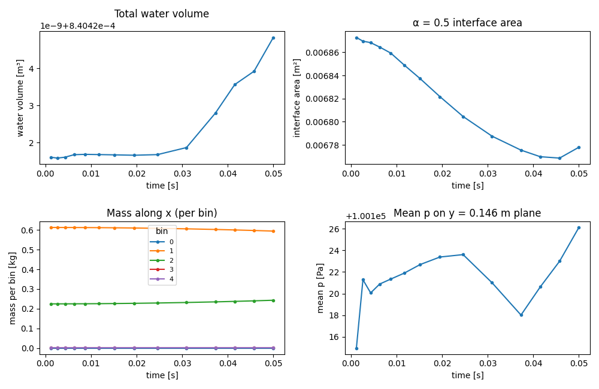
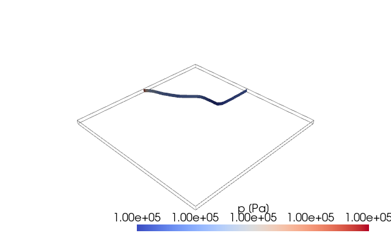

Note
Go to the end to download the full example code.
Run live with the solver, then plot¶
So far we drove execute / write by hand to keep tutorials self-contained.
The whole point of pyOFTools, though, is that the running solver calls them
for you. This tutorial closes the loop:
write a
postProcess.pyto the cloned case that combines the monitors from tutorials 02-04,truncate the case’s
endTimeso the run completes in seconds,run
compressibleInterFoam— OpenFOAM picks up thepyPostProcessingfunction object fromsystem/controlDictand calls the registered@Tableoutputs on every step,load the resulting CSVs with pandas and plot the time-series.
The wiring in system/controlDict is already there in the damBreak
case — see Your first in-situ post-processor for the snippet.
Clone the case¶
import os
import subprocess
import numpy as np # noqa: F401 — imported early to dodge SIGFPE
import pyOFTools.patch_pybfoam # noqa: F401
from pyOFTools import clone_example
CASE = clone_example("damBreak")
print(f"working case: {CASE}")
working case: /tmp/pyoftools_5xjsl6ew/damBreak
The post-processor file¶
OpenFOAM’s pyPostProcessing function object imports postProcess.py
from the case directory, calls the module-level postProcess object with
the mesh to get a runner, then calls execute / write / end on it.
The damBreak case already ships such a file, and clone_example brought it
across with the rest of the case:
"""In-situ monitors for the damBreak case.
Loaded by OpenFOAM's ``pyPostProcessing`` function object — see the
``pyPostProcessing`` block in ``system/controlDict``. The ``pyClassName``
there is ``postProcess``, so OpenFOAM looks up the module-level
``postProcess`` object below, calls it with the mesh to get a runner, and
drives ``execute`` / ``write`` / ``end`` on that runner on its own schedule.
Each ``@Table`` decorator below registers one CSV output. Add a new one and
the next run will produce a new file under ``postProcessing/`` — no other
plumbing needed.
"""
from pyOFTools.aggregators import Mean, Sum, VolIntegrate
from pyOFTools.binning import Directional
from pyOFTools.builders import area, field, iso_surface, plane, sample
from pyOFTools.postprocessor import PostProcessorBase
# ``base_path`` is concatenated with each filename verbatim, so it needs the
# trailing slash. Relative path → resolves under the solver's cwd, which is
# the case directory.
postProcess = PostProcessorBase(base_path="postProcessing/")
@postProcess.Table("water_volume.csv")
def water_volume(m):
# Total volume of liquid in the tank — a conservation check.
return field(m, "alpha.water") | VolIntegrate(name="water_volume")
@postProcess.Table("interface_area.csv")
def interface_area(m):
# Area of the α = 0.5 iso-surface ≈ the gas–liquid interface. Grows when
# the wave breaks up, drops when it coalesces.
return iso_surface(m, "alpha.water", 0.5) | area() | Sum(name="interface_area")
@postProcess.Table("mass_profile_x.csv")
def mass_profile_x(m):
# Mass binned along the tank's x-axis. ``rho`` only exists once the
# thermophysical model has initialised, i.e. at the first solver step.
edges = [0.0, 0.146, 0.292, 0.438, 0.584]
return (
field(m, "rho")
| Directional(bins=edges, direction=(1.0, 0.0, 0.0), origin=(0.0, 0.0, 0.0))
| VolIntegrate(name="mass")
)
@postProcess.Table("mean_p_midplane.csv")
def mean_p_midplane(m):
# Average pressure on a horizontal plane halfway up the initial water
# column. ``sample`` interpolates the volume field onto the plane.
return (
plane(m, point=(0.0, 0.146, 0.0), normal=(0.0, 1.0, 0.0))
| sample(m, "p")
| Mean(name="mean_p_midplane")
)
Four @Table outputs — water volume, interface area, mass profile along
x, mean pressure on a horizontal mid-plane — combine the patterns from
tutorials 02-04 into the single post-processor the live solver will call.
Trim endTime for the tutorial¶
The shipped controlDict runs to t = 2.0 — fine for a real study,
too slow for a doc build. dictionary.read parses it, cd.set patches
the entry, cd.write puts it back as a valid OpenFOAM dictionary
(preserving format, comments, and adjacent entries).
from pybFoam import dictionary
control_dict_path = CASE / "system" / "controlDict"
cd = dictionary.read(str(control_dict_path))
cd.set("endTime", 0.05)
cd.write(str(control_dict_path))
Mesh, set fields, run the solver¶
Same sequence ./Allrun would do. The mesh is built in-process with
generate_blockmesh; setFields and the solver run as subprocesses
(the solver is a C++ binary, so no in-process equivalent).
from pybFoam import Time, argList, dictionary
from pybFoam.meshing import generate_blockmesh
env = {**os.environ}
def run(cmd):
res = subprocess.run(cmd, cwd=CASE, env=env, capture_output=True, text=True, check=True)
# OpenFOAM is chatty — show the tail so the gallery output stays useful.
tail = "\n".join(res.stdout.splitlines()[-5:])
print(f"$ {' '.join(cmd)}\n{tail}\n")
time = Time(argList([str(CASE), "-case", str(CASE)]))
generate_blockmesh(time, dictionary.read(str(CASE / "system" / "blockMeshDict")))
run(["pyoftools", "setFields", "system/setFields.py"])
run(["compressibleInterFoam"])
$ pyoftools setFields system/setFields.py
fileModificationChecking : Monitoring run-time modified files using timeStampMaster (fileModificationSkew 5, maxFileModificationPolls 20)
allowSystemOperations : Allowing user-supplied system call operations
// * * * * * * * * * * * * * * * * * * * * * * * * * * * * * * * * * * * * * //
I/O : uncollated
$ compressibleInterFoam
Viscous : (-4.263073240876908e-06 -7.678422107909316e-05 6.094828253545187e-05)
writing force and moment files.
End
Load the CSVs¶
Each @Table produced one CSV under postProcessing/. They have a
time column plus the named value column (and group for binned
outputs).
import pandas as pd
vol = pd.read_csv(CASE / "postProcessing" / "water_volume.csv")
area_df = pd.read_csv(CASE / "postProcessing" / "interface_area.csv")
mass = pd.read_csv(CASE / "postProcessing" / "mass_profile_x.csv")
plane_p = pd.read_csv(CASE / "postProcessing" / "mean_p_midplane.csv")
print(vol.head())
print(mass.head())
time water_volume
0 0.001190 0.00084
1 0.002626 0.00084
2 0.004318 0.00084
3 0.006304 0.00084
4 0.008732 0.00084
time mass group
0 0.00119 0.000000 0
1 0.00119 0.612963 1
2 0.00119 0.224757 2
3 0.00119 0.001472 3
4 0.00119 0.001393 4
Plot the monitors¶
Four panels: water volume (should be conserved-ish), interface area (grows as the wave breaks up), per-bin mass along x (the wave front advances), and mean pressure on the mid-plane.
import matplotlib.pyplot as plt
fig, axes = plt.subplots(2, 2, figsize=(10, 6.5))
axes[0, 0].plot(vol["time"], vol["water_volume"], marker="o", markersize=3)
axes[0, 0].set(xlabel="time [s]", ylabel="water volume [m³]", title="Total water volume")
axes[0, 1].plot(area_df["time"], area_df["interface_area"], marker="o", markersize=3)
axes[0, 1].set(xlabel="time [s]", ylabel="interface area [m²]", title="α = 0.5 interface area")
# Long-format: one row per (time, bin). Pivot so each bin is its own line.
mass_wide = mass.pivot(index="time", columns="group", values="mass")
mass_wide.plot(ax=axes[1, 0], marker="o", markersize=3)
axes[1, 0].set(xlabel="time [s]", ylabel="mass per bin [kg]", title="Mass along x (per bin)")
axes[1, 0].legend(title="bin", fontsize=8)
axes[1, 1].plot(plane_p["time"], plane_p["mean_p_midplane"], marker="o", markersize=3)
axes[1, 1].set(xlabel="time [s]", ylabel="mean p [Pa]", title="Mean p on y = 0.146 m plane")
fig.tight_layout()
plt.show()

Visualise the interface at the final time¶
The CSVs only carry scalars; for the geometry of what just happened, drop back to pyvista. We pick the α = 0.5 iso-surface — the gas–liquid interface — at the end of the run and colour it by pressure.
import pyvista as pv
from pybFoam import pyvista_read
reader = pyvista_read(CASE)
reader.set_active_time_value(reader.time_values[-1])
internal = reader.read()["internalMesh"]
interface = internal.contour(isosurfaces=[0.5], scalars="alpha.water")
plotter = pv.Plotter(window_size=(640, 400), off_screen=True)
plotter.add_mesh(internal.outline(), color="gray")
plotter.add_mesh(
interface,
scalars="p",
cmap="coolwarm",
scalar_bar_args={"title": "p [Pa]"},
)
plotter.view_isometric()
plotter.show()

Where to go next¶
How-to guides — point-in-time recipes for specific tasks (iso-surface area, residual extraction, custom aggregator).
Wire pyOFTools into system/controlDict — full
pyPostProcessingreference includingwriteControlvariants and HDF5 output.Core data structures — what’s actually flowing through the pipeline (geometry, mask, groups, field) and how custom nodes fit in.
Total running time of the script: (0 minutes 1.654 seconds)